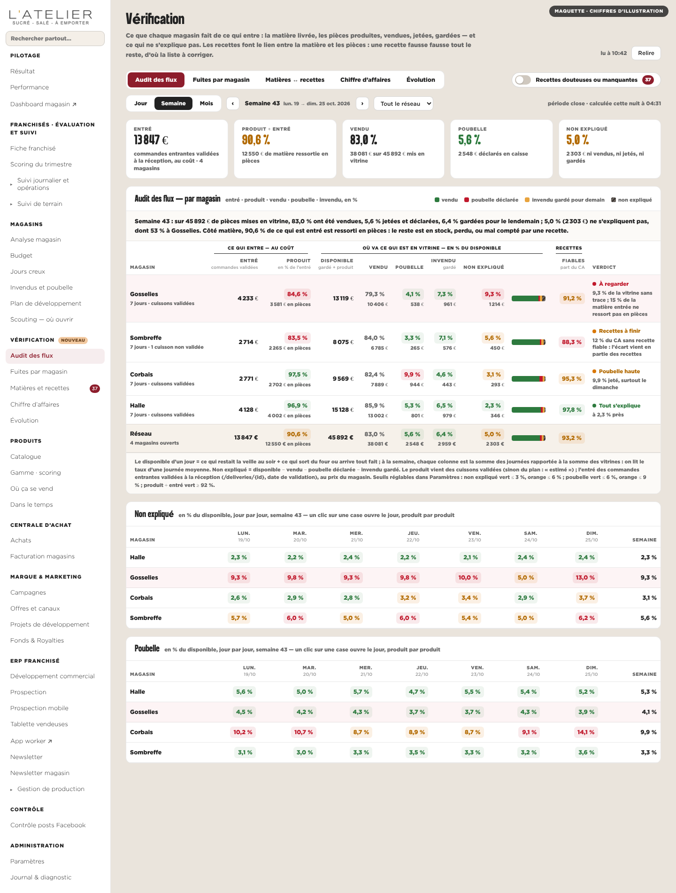
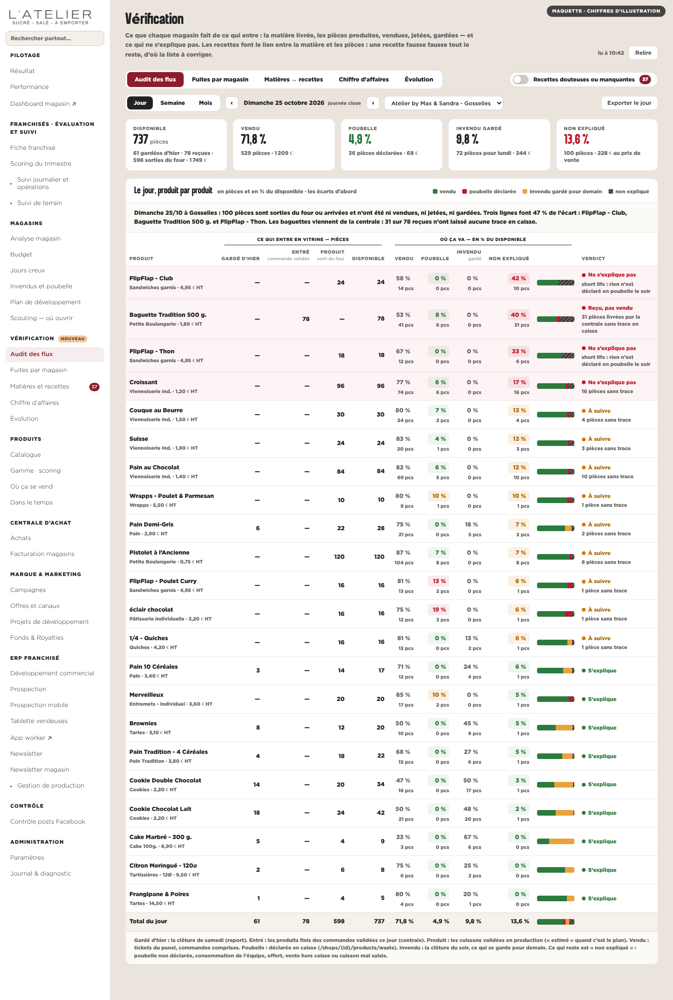
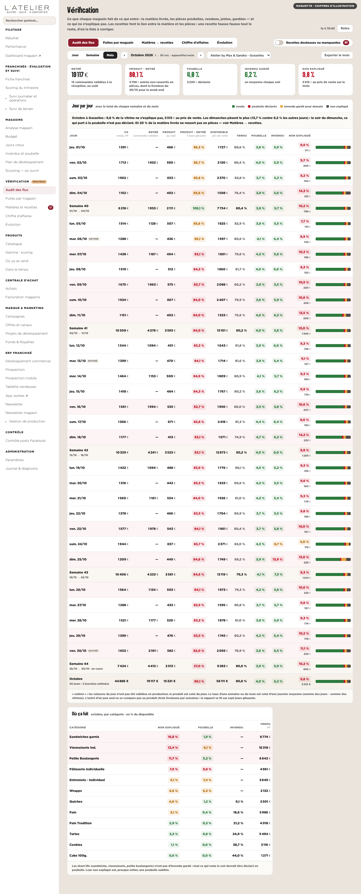
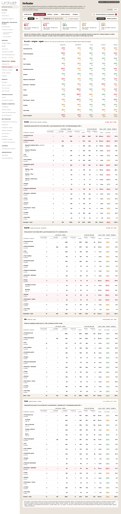
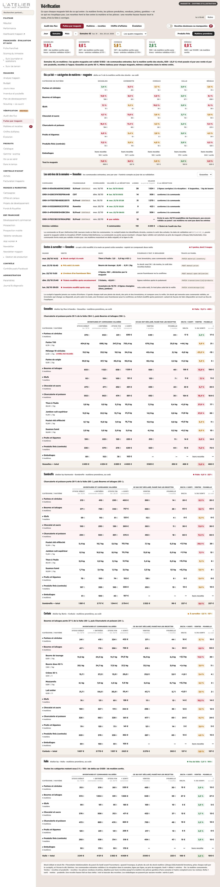
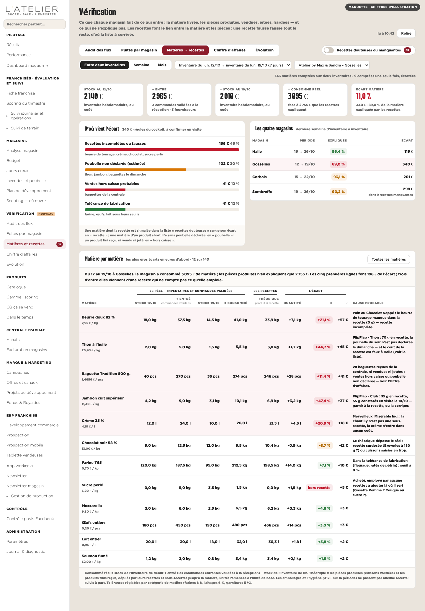
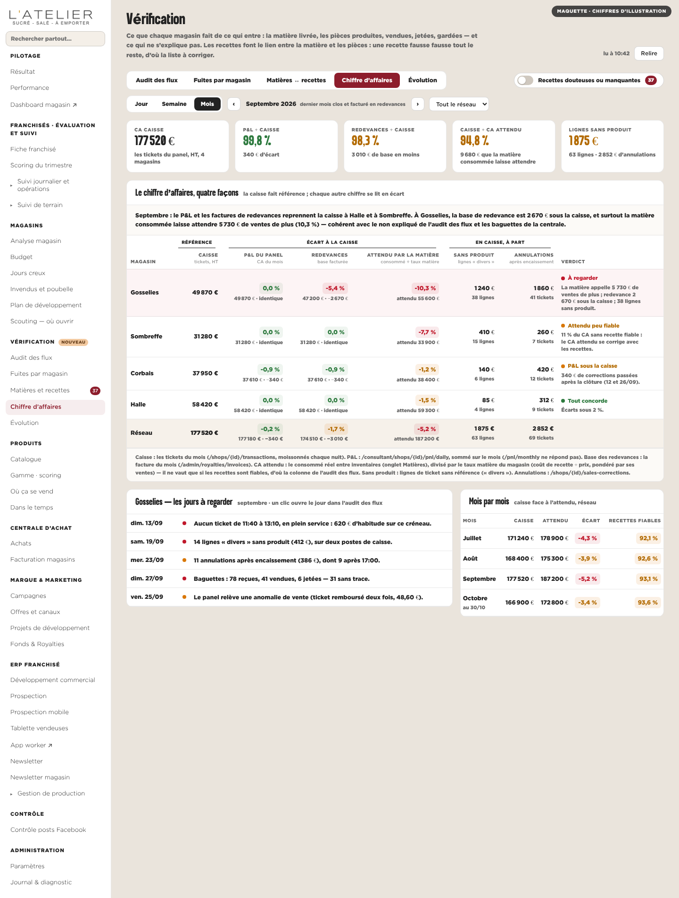
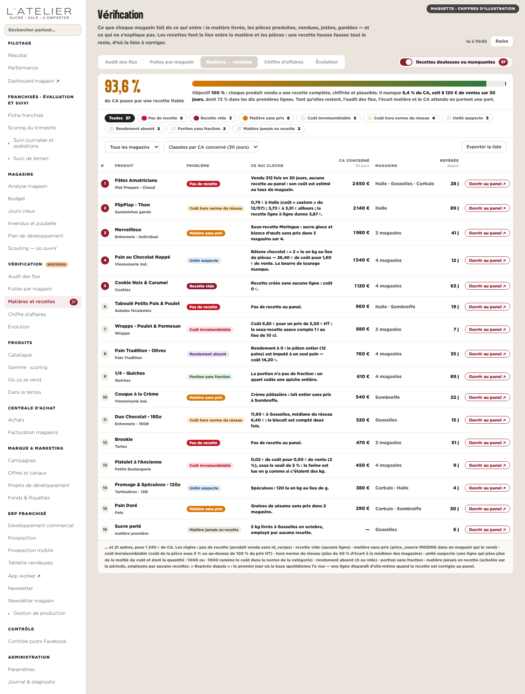
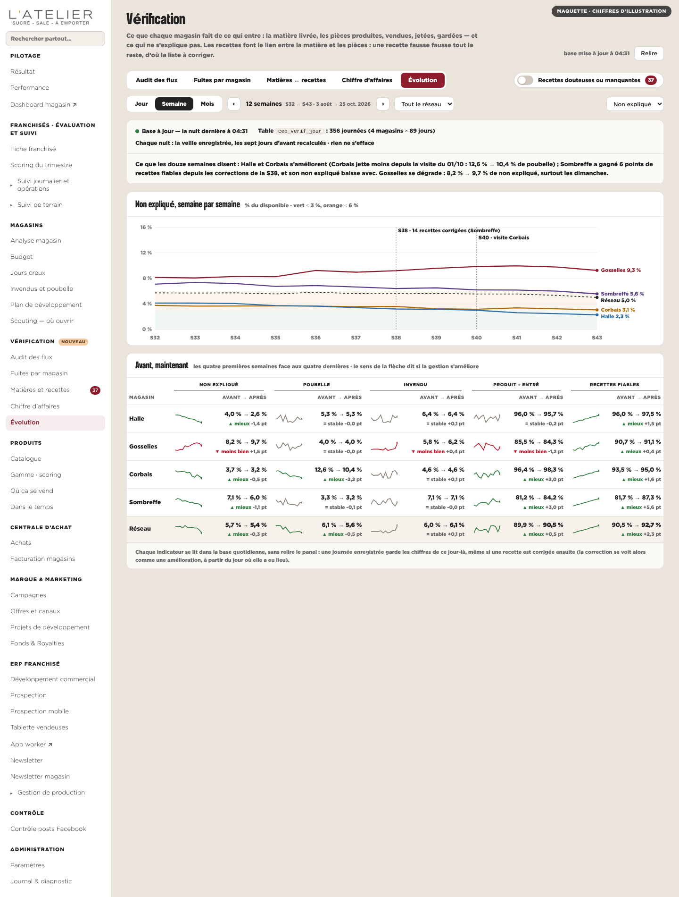

Une rubrique nouvelle du cockpit. Quatre onglets et une bascule : l’audit des flux (entré · produit · vendu · poubelle · invendu, en %, au jour, à la semaine, au mois), la matière face aux recettes entre deux inventaires, le chiffre d’affaires rapproché quatre fois, l’évolution lue dans une base remplie chaque nuit — et la liste des recettes à corriger pour une gestion à 100 %. Chiffres d’illustration.

Audit des flux — le réseau, la semaine — Par magasin : ce qui entre (au coût), ce qui devient pièces, et où vont les pièces, en % ; le non expliqué jour par jour.

Audit des flux — un jour, produit par produit — Gardé d’hier, entré, produit, disponible ; vendu, poubelle, invendu, non expliqué — en pièces et en %.

Audit des flux — un magasin, le mois — Jour par jour, le total de chaque semaine et du mois ; où ça fuit, par catégorie.

Fuites par magasin — produits finis — Un tableau par magasin, la même structure : stock début + entrées (commandes validées) + produit − stock fin = sorti ; − ventes − poubelle = delta, par catégorie et par produit.

Fuites par magasin — matières premières — Le même tableau en matières : l’entrée est la commande validée à la réception ; les commandes de la semaine, une par une ; les gestes à surveiller.

Matières ↔ recettes — Stock + entré − stock = consommé réel, face au théorique des recettes ; d’où vient l’écart.

Chiffre d’affaires — Caisse, P&L, base des redevances, CA attendu par la matière ; les jours à regarder.

La bascule : recettes douteuses ou manquantes — 37 recettes classées par CA concerné ; la couverture vers 100 %.

Évolution — La base quotidienne : douze semaines, avant / maintenant, mieux ou moins bien.